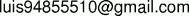

ERASMO
DE ROTTERDAM
ELOGIO DE LA LOCURA
Traducción del latín y prólogo
de
A. RODRÍGUEZ BACHILLER
Con 82 dibujos de Holbein, procedentes
de la edición de Johannes Froben,
impresa en Basilea en 1515
Tanto la versión en pdf como la html están bajo licencia GNU FDL, con
Copyright (C) 2005 Luis Alberto Saavedra Godoy.

Para la versión en pdf : Elogio.pdf
Estas versiones están basadas en documentos de dominio público, la
versión
en pdf fue creada para hacer un libro de bolsillo del tamaño de 1/4 de
hoja carta.